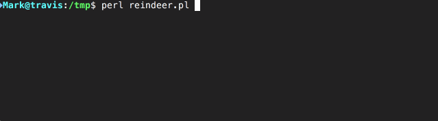

Choices, choices, so many choices!
Every day we have to tell our computers about the hundreds of choices we make each day. Yes, I'd like to get the blue scarf, not the green one. Change into this directory not that one. Please force push those changes all over that branch. Yes, of course I'm sure!
Being the command line geeks we are, most of the time this comes in the form of passing arguments to command line programs. Passing option flags. Setting enviroment variables before we run the script. All of these things are awesome. We can script them. There's command history. We can use command line tab completion (if we've setup bash or zsh just right.)
But sometimes this can get complex. Maybe as users we don't (or can't) know what all the options are without starting to run the script. Maybe we need to be presented with more choices depending on some of the choices we've already made. Maybe the program needs to ask the user something after it's done something with a remote server, and there was no way to predict what questions it needed to have the answer for when the program was originally run. Or maybe we just want something more user friendly than forcing the user to look up in the man page what options they need to pass.
In these situations we tend to build an interactive GUI app or a web app. However, both of these are much harder to do than writing a program tha parses simple commmand line options - there's event loops to consider, callbacks, possibly listening on various ports. Maybe there's a better, er, choice.
Introducting Term::Choose
Term::Choose is a module that allows us to interactively pick from the terminal from several options. It's really simple to use:
1: | use Term::Choose qw( choose ); |

The user simply moves the selection around with the cursor keys and hits RETURN to pick one. Easy!
Coding this is considerably more simple than developing a GUI or web app, and because it's running on a terminal you can make use of it anywhere - even on a remote server you're connected to over ssh wihtout the overhead and the complexity of doing something tricky with an X-server.
Note also that Term::Choose is a good terminal citizen. It cleans up after itself, removing the interactive prompt from the screen.
More options than fit on the screen
If you have more options than fit on the screen then the screen scrolls when you move down past the last option:
1: | use Term::Choose qw( choose ); |

Neat! You really don't have to think about it.
Picking More Than One Option
If you use the choose function in list context you can pick more than one option. Just hitting RETURN works as before, picking just the one option. However, hitting SPACE selects multiple options, and then RETURN submits them all.
1: | use Term::Choose qw( choose ); |

The Right Choice
Like all my favourite Perl modules, Term::Choose is powerful but simple to use. It does one thing, and does it well. It's the right choice.
 This article contributed by: Mark Fowler <mark@twoshortplanks.com>
This article contributed by: Mark Fowler <mark@twoshortplanks.com>